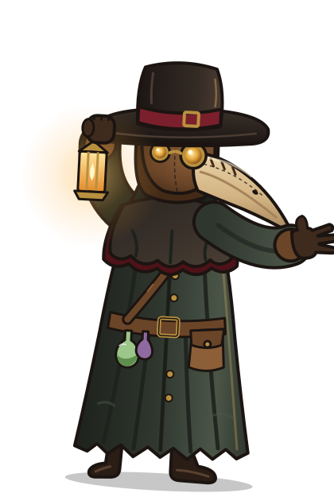

Início › Página não encontrada
Página não encontrada
Até o Doutor da Peste se perde nas ruelas medievais. Esta página não existe ou mudou de endereço.

Início › Página não encontrada
Até o Doutor da Peste se perde nas ruelas medievais. Esta página não existe ou mudou de endereço.